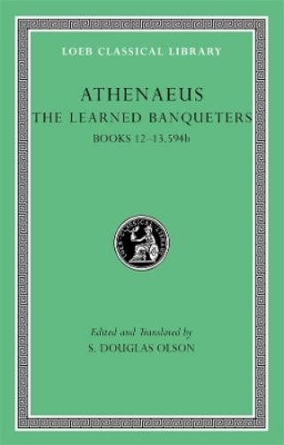
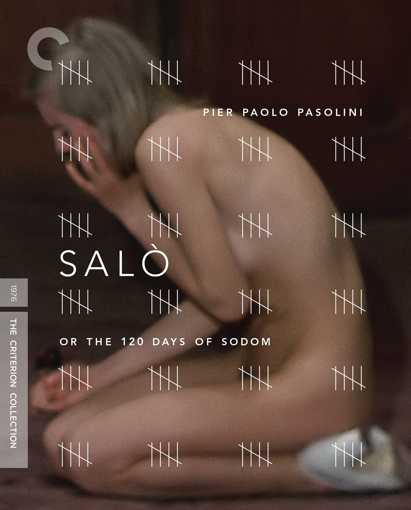
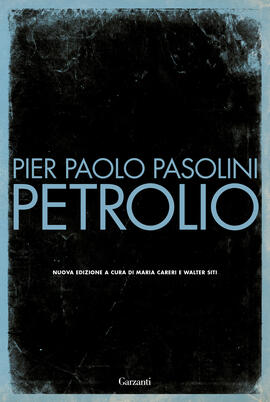
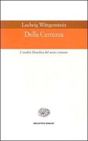
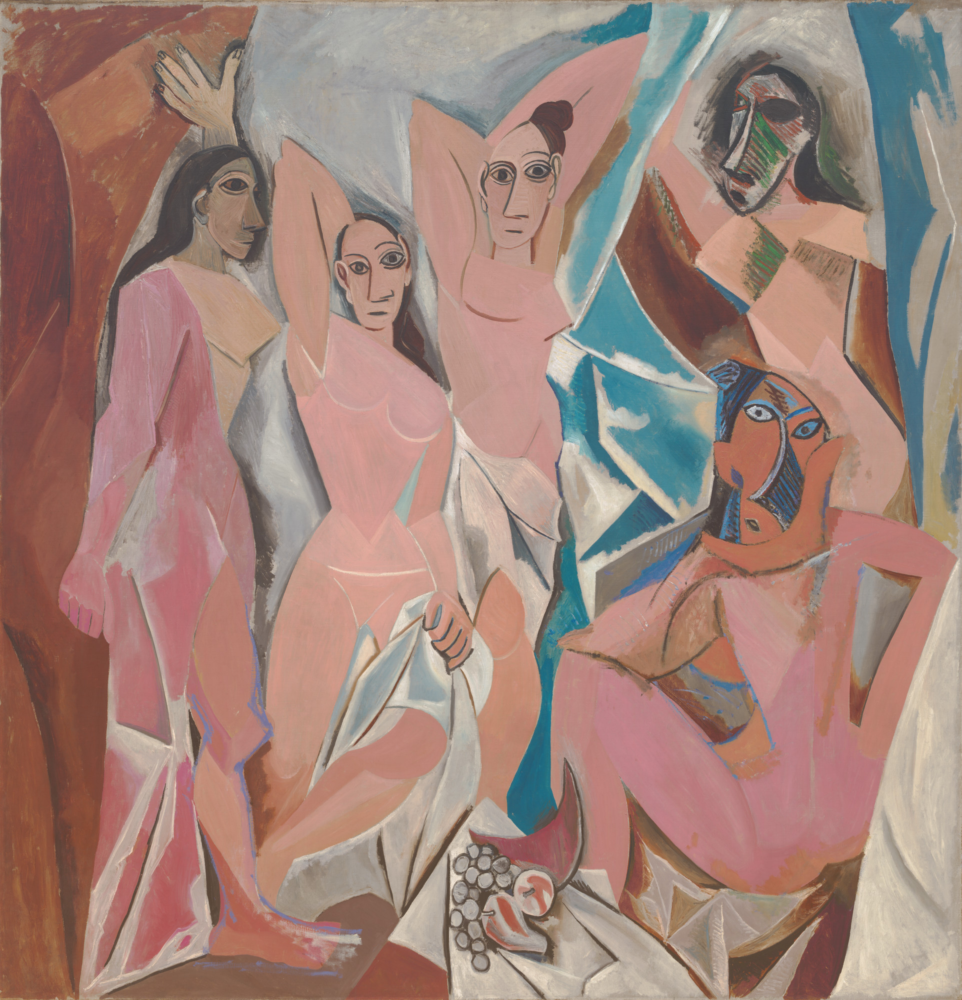

1:13:18 · 12 OPERE
Riflessioni natalizie.
Il filo del discorso
La riflessione natalizia parte da una domanda scomoda: è preferibile una felicità costruita sull’illusione oppure una conoscenza che può far soffrire? Dr Divago legge il frammento Sul piacere di Eraclide Pontico, tramandato da Ateneo, sul cittadino ateniese Trasillo. Convinto che tutte le navi del Pireo fossero sue, il personaggio gioisce dei ritorni senza soffrire delle perdite; dopo la cura rimpiange quella felicità.
Leggi la sintesi completaRiduci la sintesi
Il racconto antico diventa una figura del presente, nel quale il relatore vede una ricerca di soddisfazioni sganciata dall’esame del reale. Il lessico antico della follia e il suo impiego metaforico non costituiscono diagnosi su persone o gruppi contemporanei. La lettura di Salò, o le 120 giornate di Sodoma concentra l’attenzione sul potere che trasforma le proprie regole in un ordine assoluto. Dr Divago interpreta il quaderno dei libertini come immagine dell’arbitrio che si fa legge. Occorre però distinguere la sua lettura dalla trama: le vittime del film sono giovani rapiti, non prostitute liberamente offerte ai potenti. Anche la critica al consumismo non può essere espunta dall’opera come dato acquisito: nell’intervista sul set Pasolini parla direttamente dei corpi ridotti a merce. Il successivo richiamo a Petrolio e alle ipotesi sull’assassinio dell’autore rimane una digressione sulle interpretazioni del relatore, senza accertare moventi, mandanti o collegamenti fra persone. Socrate offre il controcanto alla felicità inconsapevole: l’esame della vita può costare dolore, ma per Dr Divago rende possibile una vita propriamente umana. Il richiamo alla sofferenza associata al sapere è compatibile con Qoèlet 1,18; quello alla vita non esaminata con l’Apologia di Socrate 38a. Sono identificazioni dei passi allusi, non titoli pronunciati in modo completo. Pirandello entra nel discorso come autore del rapporto fra identità e follia, senza individuare una sua opera particolare. Il Natale conduce quindi ai Vangeli e al cieco di Gerico. Il video sovrappone racconti distinti: in Matteo 20,29–34 compaiono due ciechi senza nome; Bartimeo è invece nominato in Marco 10,46–52. L’edizione del Nuovo Testamento attribuita a Nestle non è identificabile nel dettaglio dalla sola trascrizione. Al centro dell’interpretazione non è tanto il prodigio quanto la domanda di Gesù su ciò che l’interlocutore desidera: il relatore vi legge il riconoscimento di una persona capace di volere, rispondere e assumere una direzione. La compassione, il contatto e la sequela diventano così un modello di rapporto umano che non si esaurisce nell’elargizione materiale. Il testo non autorizza però tutte le ricostruzioni biografiche del cieco proposte nel commento. Su questo nucleo si innestano ampie digressioni sull’identità ebraica di Gesù, il conflitto israelo-palestinese, la difesa delle tradizioni e la politica culturale. Le accuse a manifestanti, istituzioni e gruppi restano giudizi del relatore: appartenenza, provenienza o scelta di una causa non dimostrano da sole una disposizione violenta. L’identità ebraica di Gesù va tenuta distinta dalle categorie nazionali moderne; la denominazione Palestina è attestata molto prima del 1964, come mostrano anche i documenti del Mandato del 1922. La vicenda delle due donne uccise nella parrocchia di Gaza è oggetto di una testimonianza e di una denuncia del Patriarcato latino: il resoconto le colloca in movimento nel complesso parrocchiale, non nascoste dietro muri che un tiratore avrebbe dovuto attraversare con lo sguardo. La scheda non converte questo chiarimento in un accertamento giudiziario delle responsabilità né usa numeri non documentati sulle comunità cristiane. Il principio della recinzione di Chesterton serve a chiedere che si comprenda una istituzione prima di demolirla. Il richiamo è riconducibile a The Thing, nel capitolo The Drift from Domesticity; la vignetta del topo e del gatto ricordata nel video è una illustrazione successiva non identificata. Dr Divago estende il ragionamento alla scuola, alla cultura di massa e alle università americane. Nel caso di Claudine Gay occorre separare il giudizio polemico dalla documentazione: la dichiarazione di Harvard del 12 dicembre 2023 ammetteva citazioni inadeguate e correzioni, ma non concludeva per una violazione dei propri criteri di research misconduct. Il confronto sulla libertà di parola non dimostra una identica disciplina giuridica per istituzioni pubbliche e private. Nell’ultima parte la crisi del rapporto con la realtà è affrontata sul terreno filosofico. Dr Divago legge la ricezione della fisica moderna come un passaggio dalla perdita della certezza classica al relativismo; richiama Wittgenstein, probabilmente Della certezza, e l’aneddoto del rinoceronte discusso con Russell. Si tratta della sua ricostruzione del rapporto fra scienza e filosofia: i risultati della fisica non dimostrano di per sé la scomparsa della realtà né la sequenza causale generale proposta. Il Nietzsche di Heidegger introduce il problema della prospettiva, della misura umana e dell’oggettività. I nessi fra queste idee e l’autoritarismo restano argomentazioni del relatore; non ogni tesi prospettivista equivale automaticamente a una dottrina politica. Il finale contrappone il carattere rivedibile delle spiegazioni scientifiche all’individualità dell’opera d’arte. Bach è ricordato senza una composizione identificabile; Il flauto magico di Mozart e Les Demoiselles d’Avignon di Picasso forniscono invece esempi precisi. Il riferimento alle opere canoviane non consente di identificare con sicurezza un gruppo scultoreo né di documentare la derivazione diretta sostenuta nel video. Per Dr Divago l’arte può generare nuove interpretazioni e nuove opere senza che una versione successiva cancelli l’originale. La conclusione torna a Kant e alla contemplazione: la formulazione della Critica della ragion pratica distingue il cielo stellato sopra di sé dalla legge morale dentro di sé, non due infiniti morali. Fra desiderio di sapere, responsabilità e meraviglia, il Natale diventa l’occasione per interrogare il rapporto fra il singolo e un orizzonte universale.
I libri nel discorso

Sul piacere (frammento su Trasillo, conservato da Ateneo)
Note sul riferimento
Copertina autentica della raccolta che tramanda il frammento; non copertina di un’edizione autonoma di Eraclide: Ateneo, The Learned Banqueters, Volume VI: Books 12–13.594b; S. Douglas Olson, Harvard University Press/Loeb Classical Library 327, 2010, ISBN 9780674996397
Il trattato di Eraclide non è disponibile come libro integro: si dichiara il contenitore della citazione. Non si attribuiscono a Eraclide autore, titolo e ISBN della raccolta di Ateneo.
Il parlato nomina il testo Sul piacere e a 80–99 s precisa che la storia di Trasillo è tramandata da Ateneo. Riscontro: Ateneo XII.81. Copertina del contenitore dichiarata.

Salò, o le 120 giornate di Sodoma
Note sul riferimento
Copertina autentica dell’edizione home video del film: Criterion Collection, home video, spine 17; copertina di Rodrigo Corral
Il film è del 1975 nel catalogo BFI; Criterion riporta 1976. È dichiarata l’edizione home video illustrativa, senza affermare che compaia nel video.
Il relatore corregge libro in film e parla di Sade, delle 120 giornate e di Salò. La lettura politico-allegorica occupa la sezione 307–573 s.

Petrolio
Note sul riferimento
Copertina autentica del romanzo, edizione Garzanti 2022: Garzanti, I libri della spiga, 2022; nuova edizione a cura di Maria Careri e Walter Siti, ISBN 9788811673316
Edizione di riferimento verificata; non è identificata l’edizione utilizzata nel video.
La forma nella trascrizione automatica Petroleum ricorre con Pasolini, Cefis ed ENI: titolo normalizzato a Petrolio; nessuna convalida delle ipotesi sul delitto.

Qoèlet (Ecclesiaste)
Identificazione probabile
Note sul riferimento
Copertina: Adelphi, Biblioteca Adelphi 414, 2001
Edizione autonoma del libro biblico, versione e commenti di Guido Ceronetti. Non è una copertina della Bibbia integrale né un’edizione confermata nel video.
La formula molto sapere/molto dolore è compatibile con Qoèlet 1,18. Libro e versetto non sono esplicitati: identificazione probabile.

Apologia di Socrate
Identificazione probabile
Note sul riferimento
Copertina del volume Apologia di Socrate. Critone: BUR · Apologia di Socrate. Critone · a cura di Maria Michela Sassi, 1993
Copertina autentica del volume BUR contenente Apologia di Socrate e Critone. Il secondo titolo non è aggiunto come citazione del video; l’autore del testo è Platone, con Socrate come figura protagonista.
La vita priva di esame razionale richiama Apologia 38a. È una allusione al detto socratico, non una lettura del titolo del volume.

Vangelo secondo Matteo
Note sul riferimento
Copertina del volume completo: San Paolo, 2014 · Nuova Versione dai Testi Antichi · edizione di riferimento
Vangelo secondo Matteo è un libro della Bibbia. L’immagine mostra il volume completo San Paolo di riferimento, non un’edizione autonoma del singolo libro e non una versione identificata nella citazione.
Il relatore nomina Matteo e i ciechi di Gerico; la redazione Matteo 20,29–34 ha due ciechi anonimi. Il Bartimeo nominato appartiene a Marco 10,46–52.

The Thing (Why I Am a Catholic)
Identificazione probabile
Note sul riferimento
Copertina della raccolta contenente The Thing: Ignatius Press, The Collected Works of G. K. Chesterton, vol.3,1990, ISBN 9780898703115
Dichiarata copertina della raccolta vol.3, insieme a The Catholic Church and Conversion, The Well and the Shallows e altri testi. Non implica che il relatore citi tutte queste opere né possieda tale volume. Data 1990 del prodotto ufficiale distinta dalla prima 1929. Non usata come immagine principale la sola tela verde con monogramma del catalogo 1930, poco identificabile visivamente.
Il principio della recinzione è riconducibile a The Thing, The Drift from Domesticity. Il libro non viene nominato: identificazione probabile; vignetta non attribuita a Chesterton.

Della certezza (Über Gewissheit / On Certainty)
Identificazione probabile
Note sul riferimento
Copertina autentica dell’edizione italiana dell’opera identificata in via probabile: Einaudi, Biblioteca Einaudi 61, 1999; traduzione Mario Trinchero, introduzione Aldo Gargani, ISBN 9788806152369
Edizione di riferimento verificata; non è identificata l’edizione utilizzata nel video.
Wittgenstein è nominato nella discussione della certezza, con sequenza nella trascrizione automatica uncertainty: probabile On Certainty/Della certezza. Il titolo resta da confermare con ascolto.

Nietzsche
Note sul riferimento
Copertina: Adelphi, 2018 · edizione di riferimento
Heidegger e il suo Nietzsche sono introdotti nella discussione sulla rappresentazione e sulle prospettive; l’identificazione è con l’opera di Heidegger, non con un volume scritto da Nietzsche.

Il flauto magico (Die Zauberflöte, K 620)
Note sul riferimento
Copertina del libretto · Adelphi 2025: Copertina del libretto: Emanuel Schikaneder, Adelphi, Piccola Biblioteca 826, 2025, 274 pagine, ISBN 9788845940613; testo originale a fronte, traduzione di Gian Piero Bona, prefazione di Pietro Citati, saggio di Jurgis Baltrušaitis. È una edizione di riferimento successiva al contesto del video, non un’esecuzione musicale.
Copertina autentica del libretto di Schikaneder: il riferimento nel video riguarda l’opera di Mozart. La pubblicazione del 2025 non viene attribuita al relatore né presentata come partitura.
Opera nominata nella sezione sull’arte e sul carattere non sostituibile di un’opera compiuta. Il riferimento generico a Bach non permette una seconda voce precisa.

Les Demoiselles d’Avignon
Note sul riferimento
Riproduzione autentica dell’intero dipinto dal museo conservatore; non copertina di libro: MoMA, New York, oggetto 333.1939; Parigi giugno–luglio 1907, olio su tela
Immagine del dipinto, non un’edizione editoriale. Copyright indicato dal museo: Estate of Pablo Picasso/Artists Rights Society (ARS), New York.
Il titolo è reso dalla trascrizione automatica come Damoselle d’Avignon, associato a Picasso. Verificato il dipinto MoMA 333.1939; non confermata la derivazione da Canova.

Critica della ragion pratica
Note sul riferimento
Copertina: Bompiani, 2000
Il titolo è esplicito nel finale; il commento parafrasa in modo impreciso la conclusione sul cielo stellato e la legge morale.